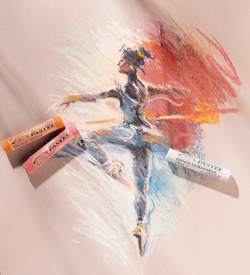

وهو مادة تشبه الطبشور ويستعمل على بعض انواع القماش الخشن والورق والكرتون يختلف الرسم بالباستيل عن غيره من ألوان الفنون, إذ لا تدخل فيه أية مادة مذيبة, وإنما يرسم به جافاً, والمادة والأساليب الفنية للرسم بألوان الباستيل لها طابعها الخاص, ويصنع الباستيل عادة من عدة درجات, فمنه الناعم والمتوسط والمتصلب. وقد أصبح الباستيل فناً مستقلاً منذ القرن الثامن عشر, وهو يتناسب مع أسلوب فن الروكوكو, رقيق التعبير المعروف في هذا العصر. ويعتبر فن الرسم بالباستيل أفضل عناصر التلوين في التصوير بعد الرسم بالألوان الزيتية. لأن ألوانه تتنوع بصورة كبيرة, وهو يعطي الألوان الرقيقة التي تستطيع أن تعطي لون اللحم في رسم الأجسام, وتعطى درجات قوية بين الألوان الفاتحة والغامقة و تنقسم ألوان الباستيل إلي نوعين:
oil pastel
soft pastel
ونتقسم إلى نوعين:
أ- طباشيري ويفيد في المساحات الواسعة
ب - اقلام الباستيل وهي تستعمل كثيراً في المناطق الدقيقة و لرسم لوحه من ألوان السوفت باستيل نحتاج بالإضافة للألوان
كراسة خاصة بالسوفت باستيل يكون مكتوب عليها ونلاحظ ان الورق يكون مفصول بورق شفاف ليحافظ على اللون
و من ثم نبدأ بالرسم بكل بساطه وبعد الانتهاء من الرسم نحتاج إلى سبراي خاص بالورق ليثبت اللون ويرش
على اللوحة بشكل عامودي.
فيديو تعليمي